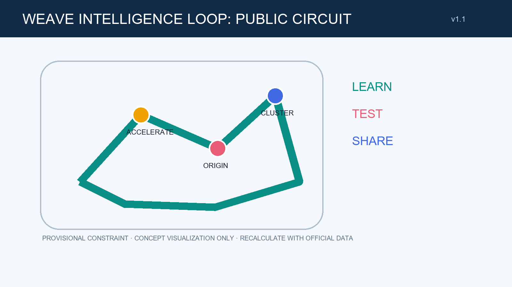
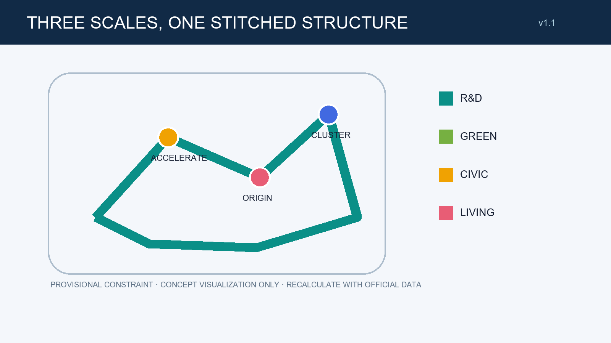
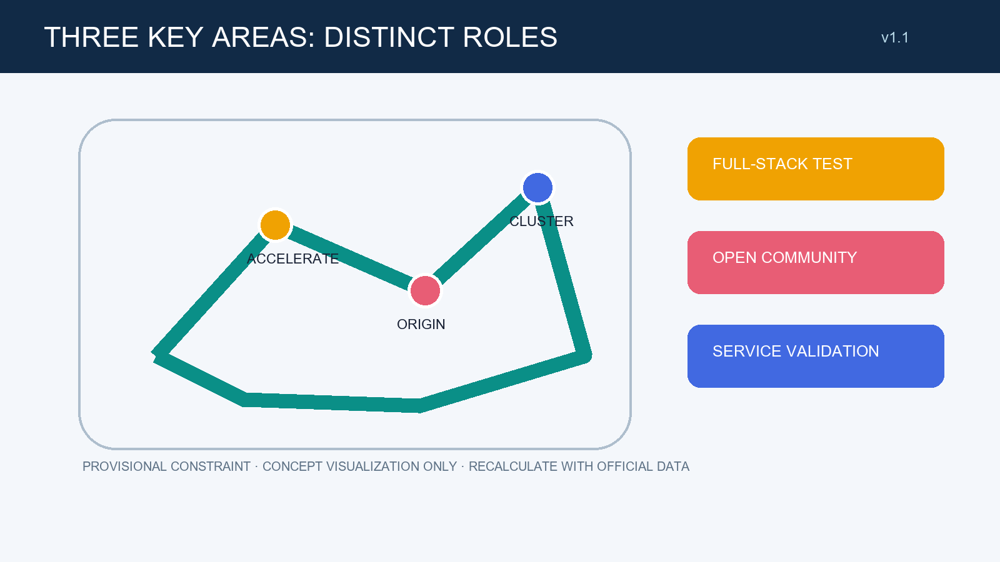
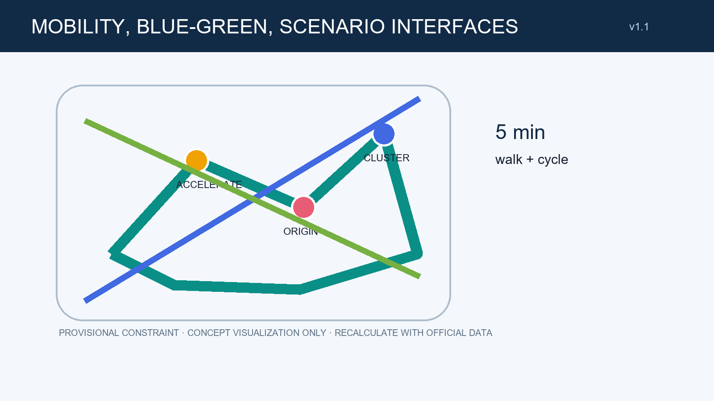
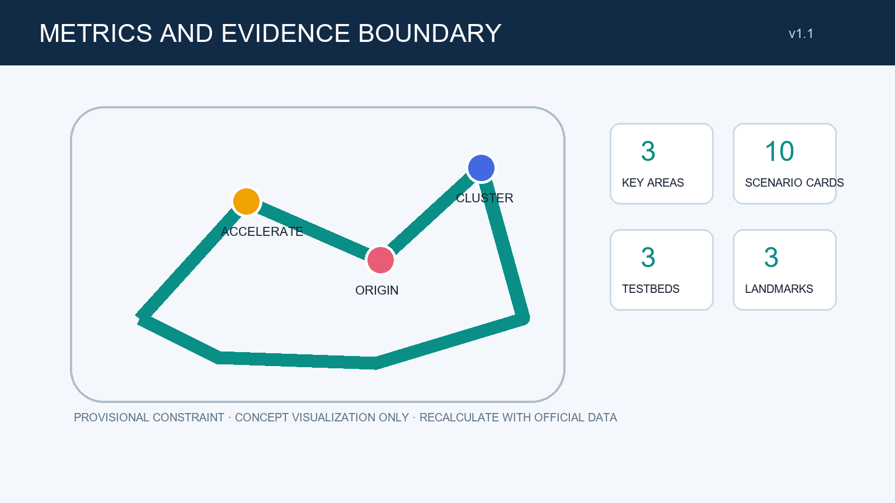

WEAVE INTELLIGENCE LOOP: OFFLINE DESIGN BOARD
PROVISIONAL CONSTRAINT, NOT AN OFFICIAL REDLINE; RECALCULATE WITH OFFICIAL DATA
LEARN—TEST—SHARE: a walkable, dwellable, explainable public circuit connects the three key areas.
Core metrics
Spatial diagrams





Evidence inventory
Overview map, three-level scope, key areas, land use, active mobility, blue-green public space, buildings, renewal projects, AI scenarios, core metrics, task coverage, self-check status, sources, assumptions
Task coverage and self-check status
Covers three scales, three key areas, ten scenario cards, three test/validation scenarios, three conceptual honour nodes, and all six agent tasks. Re-run local self-check before submission; this page makes no approval or implementation claim.
Sources: site package, agent taskbook, source registry. Assumptions: provisional boundary; engineering and ownership need professional confirmation.